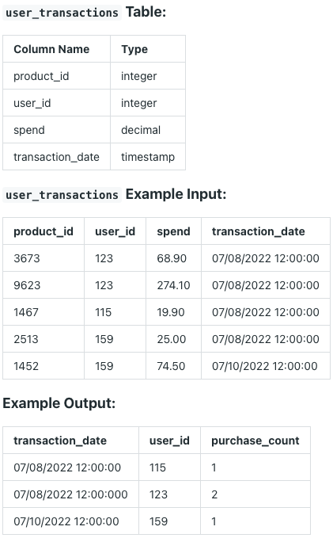

Question sourced from DataLemur.com.
Database: PostgreSQL
Assume you're given a table on Walmart user transactions. Based on their most recent transaction date, write a query that retrieve the users along with the number of products they bought.
Output the user's most recent transaction date, user ID, and the number of products, sorted in chronological order by the transaction date.

/*
My strategy: Create a window function, assigning a rank for each
unique transaction date for each user, ordered by most recent date.
Wrap this query in a CTE, then, filter by rows only with a rank of
1 (i.e. most recent date). Finally, count the total number of rows
for each user to get a purchase count.
*/
WITH transaction_rank AS (
SELECT transaction_date, user_id,
RANK() OVER(
PARTITION BY user_id
ORDER BY transaction_date DESC) AS transaction_rank
FROM user_transactions
)
SELECT transaction_date, user_id, COUNT(*) AS purchase_count
FROM transaction_rank
WHERE transaction_rank = 1
GROUP BY transaction_date, user_id
ORDER BY transaction_date;